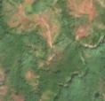
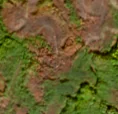

7,5 ha de pădure schimbată lângă Ohabița
Între 4 septembrie 2026 și 14 septembrie 2026, pe aproximativ 7,5 ha de pădure din comuna Păltiniș, lângă Ohabița, județul Caraș-Severin, imaginile Sentinel-2 arată că vegetația a dispărut sau s-a schimbat puternic. Nu pare o tăiere de lemn.
Autorizația de tăiere
nu e tăiere de pădure
Schimbarea nu pare tăiere de lemn, așa că autorizațiile de tăiere nu se aplică. Nu s-a schimbat nimic pe teren: e doar sezonul, norii sau lumina.
Ce se vede în poze: În poza detaliată zona marcată era acoperită de pădure deasă. În poza «după», pădurea pare brună, dar aceeași culoare apare pe multe dealuri din jur, deci pare o schimbare de sezon (sau o problemă generală a pădurii), nu o tăiere locală.


Înainte și după: Copernicus Sentinel-2, 10 m pe pixel, conturul zonei cu portocaliu. Poza detaliată (Esri World Imagery) e de acum 1–4 ani: arată ce era acolo înainte, nu tăierea.
Pe scurt
- Identificator
- 20260914_45370_22093
- Locul
- Ohabița, comuna Păltiniș, județul Caraș-Severin (SIRUTA 53425)
- Coordonate (centru)
- 45.37050, 22.09294 · Google Maps · OpenStreetMap
- Suprafața
- 7,5 ha (din pixeli de 10 m; ± câțiva pixeli pe margine)
- Ultima imagine cu pădurea întreagă
- 4 septembrie 2026
- Prima imagine cu schimbarea
- 14 septembrie 2026
- Imagini în care se vede schimbarea
- 6
- Cât de sigur e semnalul din satelit
- ridicată
- Autorizația cea mai apropiată
- APV 2400124401080 · Ocolul Silvic Paltinis, valabilă 16 iunie 2025 – 31 iulie 2025, la 499 m de zonă
- Terenul
- o parte în pădure de stat, o parte privată sau fără amenajament publicat
- Garda Forestieră
- Timișoara
Dacă vrei să verifici sau să sesizezi
- Pădurile din județul Caraș-Severin sunt în grija Gărzii Forestiere Timișoara, care controlează tăierile și dă amenzile.
- Autorizația găsită în zonă e emisă de Ocolul Silvic Paltinis.
- Formularul Gărzii Forestiere Naționale primește sesizări și fără nume. Trimite linkul acestei pagini, coordonatele și pozele. Dacă tăierea e în desfășurare, sună la 112.
- Autorizațiile și transporturile de lemn se pot căuta în Inspectorul Pădurii.
Pagina arată ce se vede din satelit și ce scrie în registrul public; nu e o dovadă în sine.
Cum citezi zona
Linkul acestei pagini nu se schimbă. Dacă zona iese vreodată de pe hartă, pagina rămâne, cu data și cu ce știam despre ea.
Pădurea RO, zona 20260914_45370_22093: 7,5 ha, Ohabița, comuna Păltiniș, județul Caraș-Severin; schimbare văzută din satelit între 4 septembrie 2026 și 14 septembrie 2026. https://iliemihai.github.io/padurea-ro/zona/20260914_45370_22093/ (consultat la [data]). Date: CC BY 4.0.
Datele zonei: GeoJSON · toate zonele: date deschise · licența CC BY 4.0.
Istoricul zonei pe hartă
Starea se poate schimba când registrul publică o autorizație sau când analistul vede poze mai bune. O ținem aici, ca un link citat să arate și ce spuneam atunci.
Pe hartă cel târziu din 5 noiembrie 2026.
- 5 noiembrie 2026 – azi · nu e tăiere de pădure
Detalii tehnice, pentru verificare
De ce acest nivel de încredere:
- văzută schimbată în 6 imagini diferite
- peste 3 ha
- AI-ul vede pădure dispărută
- în poze, zona se schimbă vizibil față de pădurea din jur
Ce a văzut analistul cu context: În imaginea largă, tonul brun-cenușiu acoperă versanți întregi, departe de zona marcată, fără margini drepte sau însoțite de drumuri de acces noi; pădurea verde rămâne doar în văi. Zona marcată are aceeași textură ca împrejurimile, iar cea mai apropiată autorizație de tăiere este la 499 m, fără suprapunere. Nu se poate exclude complet un incendiu sau o uscare a pădurii, de aceea încrederea este moderată.
- Placa Sentinel-2
- 34TER
- NDVI de referință
- 0.87
- NBR de referință
- 0.65
- Scăderea în pădurea din jur
- 0.06
- Persistență
- 0.86
- NDVI / NBR după
- 0.361 / -0.076
- Analistul de zi (model)
- taiere · 0.8 · claude-haiku-5-5
- Analistul cu context (model)
- sezon_nori · 0.5
Cum se calculează fiecare: metodologia.
Pune harta zonei într-un articol
Copiază codul în articol (merge în majoritatea site-urilor de știri). Sau pune doar linkul: WhatsApp, Facebook și X arată singure poza zonei.